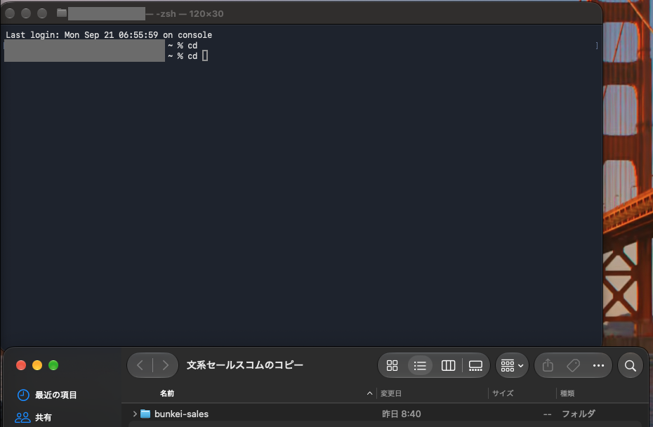
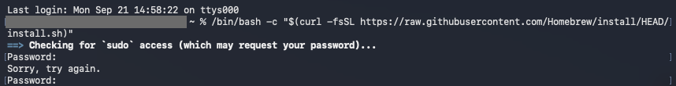
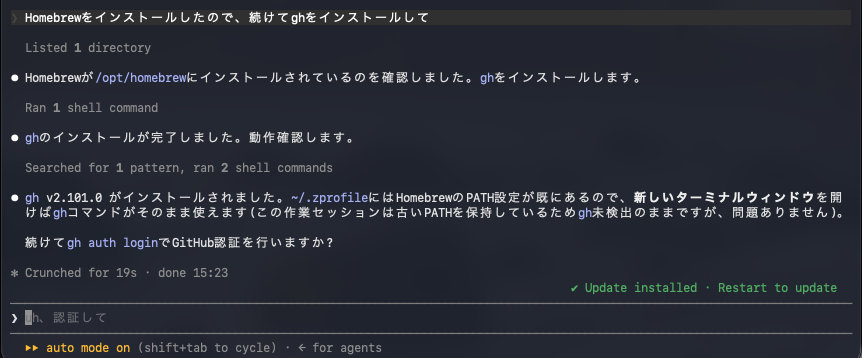

第1部 はじめの一歩
Claude CodeとGitHub 最初の5分でつまずく3か所(Mac編)
このページについて
- 読む時間
- 約5分
- こんな人向け
- MacでClaude Codeを初めて動かし、GitHubにつなぐ人
- 費用
- 無料でできる
準備
ターミナル(文字で指示を打ち込む画面)は、command+スペース で検索窓を出し、「ターミナル」と打つと開けます。
Git(作業の記録を残す道具)とGitHub CLI(GitHubをターミナルから操作する道具)は、Windows編と同じくClaude Codeに「GitとGitHub CLIをインストールして」と頼みます。Macでは、その途中でつまずきやすい所があります。
つまずき1
cd でフォルダに移動できない
こんな画面が出た


cd と打ったところで止まっている画面。下はFinderです。灰色の部分は、私のユーザー名を隠しています。画像を押すと、画面の全体を表示します。何が起きているか
cd は「場所を移動する」命令です。後ろにフォルダの場所(パス)を書きますが、Macのフォルダの場所を文字で打つのは、慣れないと難しいです。私は「cdとフォルダを指定するやり方すらわかっていない」とチャットのClaudeに打ち込んでいました。
こうすれば抜け出せる
- ターミナルに
cdと打ち、スペースを1つ空けます。 - Finderで作業フォルダを探し、そのフォルダをターミナルの画面にドラッグします。
- フォルダの場所が自動で入るので、Enterを押します。
つまずき2
パスワードを入れたら Sorry, try again. と言われた
こんな画面が出た


Password: のあとに Sorry, try again. と出て、もう一度聞かれている画面。灰色の部分は、私のユーザー名を隠しています。画像を押すと、画面の全体を表示します。何が起きているか
Macのログインパスワードを求められています。打っても画面には●も何も出ないので、打てているのか分かりません。
私は1回目、受け付けてもらえず Sorry, try again.(もう一度どうぞ)と出て「え!」となりました。打ち間違えたのか、早く打ちすぎて最初の1文字が入らなかったのか、原因はよく分かりません。落ち着いてもう一度打ったら、通りました。
こうすれば抜け出せる
- 慌てずに、Macにログインするときのパスワードをゆっくり打ってEnterを押します。
- 何も表示されなくても、打てています。
- 3回続けて間違えると終わるので、そのときはコマンドをもう一度実行します。
つまずき3
「新しいターミナルを開いて」と言われた。え、なんで?
こんな画面が出た


何が起きているか
インストールした直後は、今開いているターミナルが、まだ新しい道具の場所を知りません。開き直すと、新しい設定が読み込まれます。ウインドウが増えても問題ありません。Windowsでも同じことが起きました。
こうすれば抜け出せる
command+Nで新しいターミナルを開きます。- 新しい方で、もう一度同じコマンドを実行します。
- 古いウインドウは閉じて大丈夫です。
ここまでできたら
約5分で、MacでもClaude Codeを動かす準備ができました。GitHubへのログインは、Windows編のつまずき3と同じ手順です。
Windows編はこちら → Claude CodeとGitHub 最初の5分でつまずく3か所(Windows編)